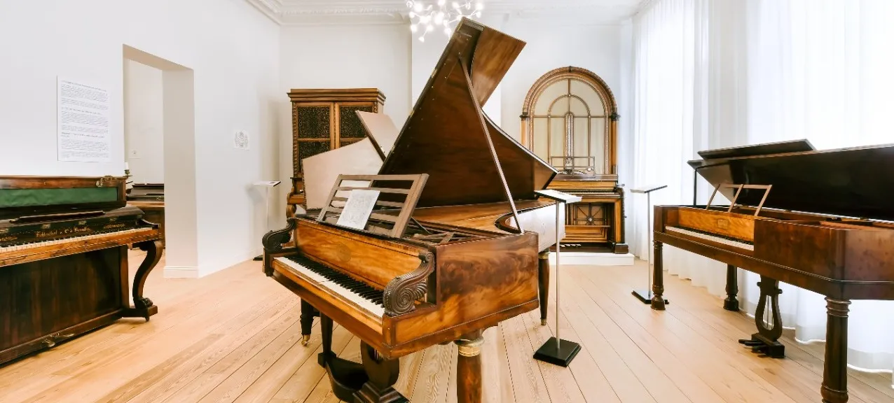

Ontdek De Piano
Piano's Mojo's belichaamt de essentie van piano's en alles wat daarmee samenhangt.
Ons motto, “De beste merken onder één dak”, omvat ons uitgebreide aanbod.
Onze diensten gaan echter verder dan alleen verkoop en verhuur.
Onze workshop is er trots op dat zowel piano's als historische toetsenbordinstrumenten worden gebouwd,
gerestaureerd en onderhouden. Bovendien dient onze historische collectie, samen met ons museum gewijd aan Belgisch pianovakmanol in Brussel,
als een rijke opslagplaats van kennis over de evolutie van de constructie van klavierinstrumenten.
